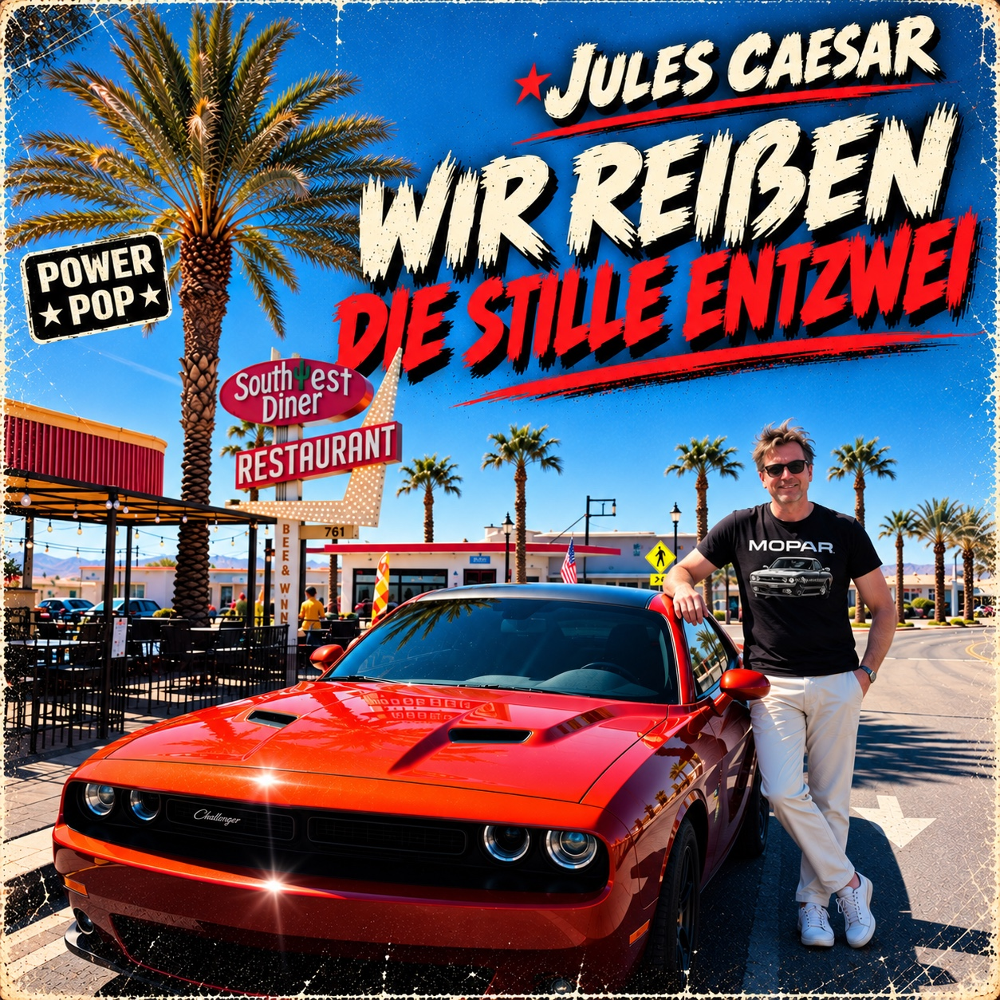

A-Seite · Promo
Caesar’s Garage · Official Artist Website
Jules Caesar

Debütsingle · A-Seite / B-Seite
Wir reißen die Stille entzwei / Arizona Surf
A-SEITE
Wir reißen die Stille entzwei
B-SEITE
Arizona SurfInstrumental
Veröffentlichung: 14. November 2026
Die erste Veröffentlichung von Jules Caesar verbindet energiegeladenen deutschsprachigen Power-Pop mit einem instrumentalen Ritt durch die Mojave-Wüste.
Music & Videos
B-Seite · Promo
Arizona Surf
Artist identity
Über Jules Caesar
Amerikanische Highways, flimmernde Neonlichter und die Sehnsucht nach dem perfekten Popsong.
Jules Caesar verbindet eingängige Melodien mit elektrischen Gitarren, Fernweh mit Lebensfreude und einen Hauch Nostalgie mit neuen musikalischen Ideen.
Musik für lange Autofahrten, offene Fenster und die Momente, in denen man einfach ein bisschen lauter dreht.
Spotify-Künstlerprofil:
Jules Caesar auf Spotify
Official release details